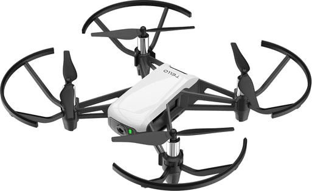

FruityFly
Video Demo
Video Explanation
System Architecture
main.py) PyBullet takes the Tello's place.Brain
The DNg02 balance cells
In FruityFly, we involved over 24 brain cells called the Dng02, aiding in balance. These cells are split in left and right, with 13 on the left, and 11 on the right. When the drone fires an equal amount of cells, we increase thrust, and the drone moves forward. When you see an imbalance of brain cells, like firing more of the left cells than the right, the drone turns. Moreover, we have “driver” and “brake” cells involved, with usually more brake cells than driver. The driver cells fire more cells, while the brake fires cells less. Usually, we have more brake cells than we do driver cells, and if we want to fire more, then we usually have to decrease the brake cells. We naturally have more cell wires involved for the right side than the left, so, for example, if we issue a command to the right and left, the impact is going to be greater for the right than it is for the left, as it is stronger. We need to balance this in practice.
Two circuits
In FruityFly, we have two circuits involved; the dodge circuit, and the balance circuit. The dodge circuit has 274 brain cells, while the balance circuit (which is made up of the balance and brain cells), has 144 cells. Notably, for the balance circuit, we have 24 balance cells, and 120 brain cells.
Staying balanced in the wind
You may ask, how does the fruit fly stay balanced in a situation where it's getting pushed by wind, and doesn’t register it as an actual signal to dodge? Well, we have wires that connect the balance to the dodge circuit, and when the wind gets strong on the drone, the balance circuit works hard to avoid the drone from drifting or swinging away, sending a “mini whisper” to the drone to not dodge yet/calm down.
Ignoring its own movement
Another question you might have: How does the drone not clock its view as a threat to itself, as movement can cause it to maybe think something is rushing towards it? To target this, the drone keeps a copy of every single movement that it takes. So, if the drone plans to move left, and does, it does not consider that to be a threat to its environment, as it views that as motion it planned itself.
Scared while eating
Now, let’s move onto the “scared while eating effect”, where it combines the banana program, and the dodge circuit we have in the brain. In practice, the drone sees a banana, moves towards it, and then “hovers”, counting down its hunger from 100% to show that it is eating. If something waves in front of it, the giant fiber escape cell fires, and it moves back for 0.7 seconds, waits, and sees the banana, and comes back to start eating. It loops back this motion if a wave occurs in front of it back again.
Limits and assumptions
Real flies’ balance cells react to moving scenery, but the wiring map shows almost no connections from the eyes to them (137 of 12,848), so we feed the camera’s motion straight into the cells that drive them as our own shortcut. The balance cells have flown in a turn-only test, but not yet together with the banana hunt. They also slow each brain step from about 13 ms to 22 ms, and every timing comes from one laptop, so other machines may differ.
Drone
Choosing a drone
The key goal of this project was putting the actual fruit fly brain onto a drone, and running the brain in real life. It just wouldn’t be the same without an actual drone, but being broke university students, our budget was pretty limited. If we had our full unlimited budget (sponsor us please and thank you) we wanted to build the drone ourselves, but instead opted for buying a pre-built second-hand drone off facebook marketplace. The drone we chose was the DJI Tello by Ryze Tech. The reasons for choosing this drone were pretty simple: it had its own flight controller, a python library to control it using our laptops over wifi, a live forward facing camera, and the biggest thing of all it fit within our budget of $100. This drone, as much as I love it, still had its issues. The main ones being the drone did not have a distance sensor, collision sensor, no GPS, unreliable speed reading and a bad battery. Maybe these limitations only kept us closer to a real fruit fly, which mainly relies on their eyes.

Simulator first
Because we only had one drone, and didn’t want to break it, one thing we did was implement a simulation of the drone for testing everything before we put it on the drone. Go to the Simulator Section for more info on the simulator.
Hardware bugs
However, even with the code working in the simulator, that did not mean there were no hardware bugs. When we first ported the code, we were having an issue with the escape neurons firing falsely. After some testing, the source of this was found to be the Auto-Exposure on the Drone’s camera, when warming up. The fix for this was a longer warm up (~3s) which fixed the false escapes. Another issue was the tello’s specs say 82.6° for the field of view (FOV), but that’s the diagonal spec, and we needed the vertical spec to convert pixel motion into angles. Working from the diagonal frame and 4:3 frame gave us 55.6°. This number is what turns the banana grew X pixels into an angle. After porting we also had to calibrate the rotation, as in the simulation we had 75 px per rad (How many pixels the image shifts when the drone rotates 1 radian), vs about 200-260 px per rad on the drone. With the simulator’s value the steering loop would have left part of the drone’s own turn in the signal, causing it to chase it’s own turn instead of correcting it.
Testing in steps
Testing on the drone meant that a mistake could mean losing a propeller, so we moved to the hardware in steps. The first steps were just basic connectivity and battery tests. Then we did some propellers off tests with the camera and escape neurons, just checking if it would fire if we swatted a hand at it. Only then did we let it fly, but that too was limited. The drone could only hover, or dodge if a swat came, with a hard auto land time after 60s. The DNg02 stabilizer went through the same steps as well. First we calibrated the rotation, with the propellers off, turning the drone by hand. Next came a test with a textured card, which we swept across the front to test the neurons were firing as intended. Then and only after all those successful tests did we implement the full banana behaviour. While flying there were also some emergency commands, q for quitting and landing safely, x for stopping the motors in an emergency.
Banana Model
Feeding
One key behaviour of the fruit fly we wanted to model in our drone was the feeding. Now due to limitations on our laptops and sanity, we decided to stick with only Bananas, and their different types of ripeness: freshripe, freshunripe, overripe, ripe, rotten, unripe. So our goal was that the drone captures images through its camera, checking if any bananas exist and if they do, then classify them into one of six categories, with the fly choosing to go to the ones that are most rotten. To do this, we built a 2 stage pipeline - a pretrained detector that locates the banana, and passes it onto a classifier we built that judges the ripeness.

1 · DetectYOLOv8 finds the banana, 97% sure

2 · Crop+8% each side, 224 × 224
3 · ClassifyMobileNetV2 picks the most likely class
Drone/flight_frames/). Yellow is the YOLO box, white is the box after the 8% expansion. Detector: fine-tuned YOLOv8n at 960 px. Classifier: the original checkpoint.Connecting the two stages
Now a bit on how the two stages are connected. Each frame from the drone’s eyes is sent to the YOLOv8 model, which returns a bounding box around every banana it finds. Because the bounding box is often a bit tight, each box is expanded by 8% of its width and height so that the tips of the bananas aren’t cut off. The banana is then cropped out of the frame and resized to 224 x 224 pixels, and normalized using the ImageNet mean and standard deviation. Then each of the bananas are fed into the MobileNetV2, which will output a probability between 0-1 for each of the 6 banana classes, with the most likely of the classes, becoming the label of the banana. The final output from this stage is a list of the banana bounding box, YOLO’s confidence that it’s a banana, the label for the banana, and the classifier’s confidence on the label. The decision to split the process into 2 stages, helped with us not having to draw the bounding boxes for the training - YOLO already knew what a banana is, we could just use a dataset containing the bananas grouped by the classes. It also meant that we could upgrade each of the 2 stages separately, which we did by swapping in a larger YOLO model, when the drone is hovering. The full pipeline runs at ~22 frames per second with the smaller model (Drone is moving), and at about ~11 frames per second with the larger YOLO model (Drone is hovering / sharp eyes detector)
wants_zoom in feeding_behaviour.py).Stage one: YOLOv8
In the first stage of the pipeline, we used the YOLOv8 (You Only Look Once) model, which is an object detector that finds every object in an image in just one pass of the network. It predicts a bounding box, and a set of class scores for each object. We used the nano version of the model, pretrained by Ultralytics, which consists of roughly 3.2 million parameters. One of these classes - Class 46 - is “banana”, so instead of training our own detector, we restricted the YOLO model to that class. A detection is only treated as food if the YOLO is 20% confident it is a banana (30% for the sharp-eyes detector). The main change we made was the image resolution. By default, YOLO shrinks the image to 640 px on its longest side, but the Tello’s image resolution is 960 x 720. A banana kept at a distance away with the defaults would lose \(1 - (640/960)^2 \approx 56\%\) of its pixels before YOLO can even see it. Running the YOLO model at the full 960 pixels raised the detection rate of a banana filling in 1.5% of the frame from 1 in 12 frames to 9 in 12 frames. This however, extra increase in performance caused roughly double the processing time. This was a trade that we deemed to be worth it. For bananas even farther away, we added a “sharp-eyes” mode using the larger YOLOv8 model and a confidence threshold of 30%. For banana’s filling in 1% of the frame, it found bananas in 22 of 24 frames compared to the smaller YOLOv8 nano, which only found it in 7 of 24 frames. Since it is about twice as slow, this only kicks in when the drone is hovering in place scanning for food, so that the control loop is fast enough for the other neurons and actions.
Dataset
Before we get into the second stage of the pipeline, I wanted to take a moment to talk about the dataset that we used to train the second model. This dataset came from Roboflow and it consisted of 5616 images of bananas, all classified according to the ripeness. The images in the dataset contained 3931 for training, 1123 for validation and 562 for testing. The dataset was skewed however, with heavy class imbalance in which rotten had 1340 training images while unripe had only 133 images. Another issue with the dataset was that the images in the dataset were close-up and well-lit, compared to the actual shots from the drone where they are instead from greater distances, as well as varying lighting conditions and sometimes motions as well. The training images also had an augmentation applied during training, to avoid overfitting. These augmentations were horizontal flips, rotations of up to 15°, and had their brightness, contrast and saturation vary by up to 20%
Each pixel \((x, y)\) is rotated about the image centre \((c_x, c_y)\) by a new random angle \(\theta\) every time the image is loaded (transforms.RandomRotation(15) in BananaModel/dataset.py).
θ = −15°θ = 0°θ = +15°Stage two: MobileNetV2
The second stage of the pipeline consists of the MobileNetV2 model. The reason we chose this model over any of the other models was that it’s small, roughly 2.23 million parameters and it’s fast on a laptop’s CPU. MobileNetV2 achieves this by replacing the standard convolutions for depthwise separable convolutions, which filter each colour channel separately before combining them. This allows it to cut the amount of calculations needed drastically while still keeping most of the accuracy. Because we had a limited dataset size (~4000 training images) we used transfer learning. This is a technique in which instead of retraining the whole model, we freeze the beginning layers of the model. For us, we started with MobileNetV2 which has been trained across ImageNet, a dataset containing over 1 million images, and 1000 categories, so it had already learnt how to recognize edges, colours and textures. We then froze all those feature layers, not letting their weights shift and replaced the model’s original 1000 class output layer to our custom six class output layer. The new layer applies dropout with a rate of about 20%, randomly switching off a fifth of the features so the model doesn’t rely too heavily on any single feature, followed by a linear layer that maps the 1280 features down to 6 scores. A softmax function is then applied turning these scores into a probability, and the class with the highest probability becomes the class of the banana. As a result of our earlier efforts, only 7686 of the model’s 2.23 million parameters were trained by us, about 0.34% of the network. This made training fast and reduced the risk of overfitting on our small dataset. The new layer was trained with cross-entropy loss and the Adam optimizer with a learning rate of 0.001, in batches of 32 images. After every pass of the training data (an epoch), we tested the accuracy of the model on the validation set, and saved a copy of the best found weights so far. Training was run for up to 50 epochs, stopping earlier if no improvement was found for 10 epochs in a row. This was to prevent memorizing the training images, after it had stopped getting better at classifying bananas. The final model took about 19 ms to classify a banana on a laptop CPU.
The linear layer gives six scores \(z_1, \dots, z_6\). Softmax turns them into probabilities that add up to 1:
Results
We evaluated the classifier on a test set of the dataset of 562 images, that were never used during training or model selection. It correctly classified 526 of them, with an accuracy of 93.6%. With our classes being so unbalanced we also reported the F1 macro score which weighs each class equally, regardless of the amount of images in them. This was 92%, showing the model works well across all the classes, not just the ones with the most images. Most mistakes (22 of 36 errors) were between neighbouring classes, which makes sense as bananas at adjacent stages can look quite similar. The weakest class was ripe with a recall of 78.8%. I suspect there are 2 reasons involved for this. The first reason being since it is in the middle of the classes, it can be confused with both adjacencies: freshripe and overripe. Of the mistakes 9 ripe bananas were labeled fresh ripe, and 6 over ripe were labeled ripe. The other reason being that both of these neighbouring classes have a decent bit more training images, 704 for freshripe, and 783 for overripe. This likely pulled the borderline images towards them. One unusual pattern was occasional confusion between rotten and unripe. This could be because heavily browned bananas and deep green bananas are both dark, but we did not investigate this further. In terms of speed, the classifier takes about 19 ms per banana, and the full pipeline runs at 22 fps. Since the Tello drone streams at 30 frames, this is fast enough to process most frames as they arrive. These results are on the test set though, and not on the flight tests which the next section is about.
| true ↓ · predicted → | freshripe | freshunripe | overripe | ripe | rotten | unripe |
|---|---|---|---|---|---|---|
freshripe | 101 | · | · | 1 | · | · |
freshunripe | · | 83 | · | · | · | · |
overripe | · | · | 107 | 6 | · | · |
ripe | 9 | · | · | 41 | 2 | · |
rotten | 4 | · | 6 | 2 | 169 | 4 |
unripe | · | · | · | · | 2 | 25 |
BananaModel/README.md). Rows are the true class, columns what the classifier said. The diagonal is correct, and the darker a cell, the more images landed there. Most off-diagonal counts sit next to the diagonal: neighbouring ripeness levels.| Class | Recall | Precision | F1 |
|---|---|---|---|
freshripe | 99.0% | 88.6% (101/114) | 93.5% |
freshunripe | 100% | 100% (83/83) | 100% |
overripe | 94.7% | 94.7% (107/113) | 94.7% |
ripe | 78.8% | 82.0% (41/50) | 80.4% |
rotten | 91.4% | 97.7% (169/173) | 94.4% |
unripe | 92.6% | 86.2% (25/29) | 89.3% |
| Macro average | 92.7% | 91.5% | 92.0% |
Real-world tests
In the real world tests, we found a couple of issues. The label sometimes flicked between rotten and fresh ripe from frame to frame. We believe this was due to the mismatch between the close up well-lit training photos and the photos from the drone which had varying lighting and distance. To reduce the flicker, we smoothed the ripeness label over the last 5 frames, by taking the most common prediction, so a single wrong frame can no longer change the drone’s decision. With this in place the drone chooses the most rotten banana in its view to go eat from just as real fruit flies do. The detector also has some limitations as well. Because we had not yet fine tuned the YOLO on our settings, it could sometimes miss bananas that are weirdly shaped or oriented, or partly hidden.
Fine-tuning on our own flights
To close the gap between the real world tests and the out of the box models, we ended up fine tuning both stages of the pipeline from our own flights. We started by adding another parameter (--save-frames) to save the frames of the flight twice every second. This was run with 6 practice flights, where we then saved the last flight for validation. A much larger YOLO Model (YOLO11x) was then run over those frames to classify the bananas on each frame. It was then reviewed and verified by us, to make sure all the bananas were in the correct bounding box and there were no other random bounding boxes. Frames with no bananas were also kept, so the model knew when not to classify a banana and what a wall, hand, or floor was. We then manually labeled each of the bananas from the frames as one of the 6 labels for ripeness. We held out a full flight rather than a random selection of frames, as frames half a second apart are nearly identical, so a random split would only test the model on frames it already knew of. On the held-out flight, the fine-tuned detector found 99% of bananas, compared with 77% for the original model, and 100% of distant bananas (those filling less than 1% of the frame), compared with just 20%. The ripeness classifier was also retrained on the same bananas, and its accuracy rose 60%. The original classifier labeled almost all the bananas from the drones view as rotten, while the finetuned one correctly labeled the bananas as ‘rotten’ and ‘freshripe’
Simulation
Why do we need the Simulator?
We used PyBullet to simulate the technology before we ever tested it with the drone for 3 main reasons. Firstly, and most importantly, drones are really expensive, and we are 3 university students that lack the funds for a second drone. Now, this is the main reason that if a plane or car is to be tested, it will go through several stages where each part is simulated under load so that real money and material does not have to be wasted. Now the second reason is that running simulations are much more time efficient when getting the technology to work. For example, if we were to test the escape neuron, DNp06, we would have to set up the drone, and lunge at it every time we wanted to test small code changes. Having the simulation allows us to test these small code changes without having to use the drone, which brings me into the last reason: there is only one drone between the three of us. Due to there only being one drone, if for example, someone made a change to the optical flow and wanted to test it, but another person is testing another part of the software that they changed, this will create a queue that will slow down the development. In summary, the simulations allow us repetition, no queue to test, the ability to break things for free, and most importantly confidence in testing it with the real drone.
Framework (PyBullet)
As previously mentioned, we are using the framework PyBullet for our simulation. PyBullet is an open-source Python library that is used for physics simulations. In our case, it allows us to track and test masses, forces, torques, collisions, etc., and do this all for free. Along with it being free, we chose to use it over other physics engines because the rest of our code is written in python, so it made connecting what we wanted to test to the simulation a lot easier. PyBullet not only allows us to simulate physics, but also allows us to render in a camera and respond to keyboard/mouse events. With the camera rendering, we are able to feed what the camera sees into the other models that we created, to test. So, for example, if we wanted to test optical flow, we would feed the camera into the optical flow model and then move objects towards the camera to see if optical flow is really working.
The Two Clocks
Now we are going to get into the technical nitty-gritty. The drone runs with 2 clocks, a physics clock and a decision clock. The decision clock runs at 30 Hz (33 ms), measures how the picture changed, and based on that chooses what it wants to do. Once it makes a decision, it sets a target (forward speed, sideways speed, spin rate and climb direction) for what to do in that situation, such as “move to the left at 1 m/s”. The physics clock on the drone deals with the interactions and collisions and runs at 240 Hz, which is 8 ticks for every decision tick. On each of these ticks, the drone checks for collisions then works toward the target through a chain of corrections. The speed error becomes wanted lean, the lean error becomes twist, and the altitude error becomes push. Right before the speed error becomes a lean, the drone also runs a safety net that checks how close the nearest obstacle is. If something is too close, the safety net overrides the target, either by stopping the drone from going forward or by making it back away if the obstacle is really close, so it can veto any command no matter where it came from. Then the physics engine steps the world forward once. Since the safety net runs on every physics tick and not just every decision tick, it can react within 4 ms and not 33.
What are we simulating?
The Body
The body is probably the least interesting part of the simulation, as it is essentially just a floating box with a camera. We chose a box over a quadcopter with four individual motors because it still simulates the tilt and thrust mechanisms without us having to tune each motor, which would add a lot of complexity and wouldn’t help us test the circuits we added. We do lose motor lag and realistic motor limits, but the box still obeys real rigid-body physics, which means it can’t slide sideways and has to lean first. That’s why the dodge takes around a second: the box has to lean before it can move, and that lean time is still shorter than the roughly 2.7 seconds it takes the thrown object to reach the drone (4 m at 1.5 m/s). The box also keeps the simulation simple and repeatable, so any difference between two runs comes from the brain and not from the motors.
The Eyes
The eye is just a camera that sits in the middle of the body and looks out at the nose so that when the drone tilts to move the camera will also tilt. The camera captures a 320x240 picture at 30 frames per second because these are around the parameters of the drone that we are working with. Also the eye is the only way the brain can detect anything, similar to a fly. The simulation knows exactly where all the objects are relative to each other, but we purposefully made the brain unable to read those distances, because the circuit we are testing doesn’t measure depth, it only responds to how the picture changes. (The flight controller does have its own separate safety net that uses the real distances, which we get into in the next section.)
The World
As you’ve probably noticed, the world and all the obstacles are covered in stripes. Although it does add some razzle dazzle to the world, the real purpose of the stripes is for the drone to track its surroundings. A flat uncoloured object/wall doesn’t give the camera anything to track, as the drone “sees” by following patterns in the pictures. So, if there aren’t any patterns, then it’ll be as if the drone sees nothing. The floor is striped for the same reason, so the drone always has something to track.


The Course (Walls and Box)
We simulated 2 long parallel walls and a box that sits in the middle for initial testing to make sure the drone can move around and avoid the walls and the box in the middle and make it to the finish line (a green marker on the opposite side of the walls) autonomously. The finish line is 16 meters from the start, and each run begins from a slightly different sideways position so the drone can’t just memorize one path.
The Thrown Block (Escape Neuron Test)
We then later added a way to spawn a block in front of the drone with a mouse click, which flies straight back at it to simulate the escape neuron. So, when you click the mouse, a striped block spawns 4 meters in the direction the drone is facing and flies at it at 1.5 m/s, which gives the drone just under 3 seconds to react. If the drone dodges successfully, then it disappears, but if there are any collisions, then the drone will hover and land. This way, we can track where and how the crash happened instead of seeing the drone bounce around the world. Every throw is also identical, which we could never get from lunging at the real drone.
The Banana (Model Test)
And finally, the banana model testing. For this, we just stuck a jpeg onto a flat card and then connected the model to the eyes of the drone to test if it would be able to recognize it. We used a photo instead of a 3D model because the model (YOLOv8n) never recognized the 3D version as a banana due to simulator graphics.
Simulator Limitations
It is impossible for the simulation to simulate the real environment 100%. As mentioned before, the box has no motor lag or motor limits. On top of that, there is no wind, the camera has no noise or motion blur, the lighting never changes, and the stripes are perfectly sharp, which is a lot cleaner than anything the real drone will see. That means a result in the simulation tells us the idea works and the code is correct, but it does not promise the same numbers on the real drone. To close that gap, we ran hundreds of tests with the real drone and fine-tuned the models accordingly; the simulation just served as a good starting point to test all of our code.
Settings at a glance
| Setting | Value |
|---|---|
| Body | Box, 1.0 kg, 30 × 30 × 8 cm |
| Physics clock | 240 Hz (about 4 ms) |
| Decision clock | 30 Hz (33 ms), 8 physics ticks per decision |
| Camera | 320 × 240, 75° field of view, sees from 0.05 m to 50 m |
| Finish line | 16 m from the start |
| Test block | Spawns 4 m away, moves at 1.5 m/s |
| Crash response | Hover for 180 ticks (0.75 s), then land |
| Max speed / tilt / yaw rate | 2.0 m/s / 0.45 rad (about 26°) / 1.5 rad/s |
| Safety distances | Within 0.6 m: no moving forward. Within 0.3 m: back away at 0.25 m/s. Only obstacles within 70° of the nose count. |
| Real drone | DJI Tello, about 80 g, 960 × 720 video at 30 fps, 82.6° diagonal field of view (55.6° vertical) |
Values from Simulator/pybullet_drone.py, Simulator/pybullet_simulator.py and Simulator/camera.py. The Tello's mass is DJI's published spec.
References
- Shiu, P. K. et al. A leaky integrate-and-fire computational model based on the connectome of the entire adult Drosophila brain reveals insights into sensorimotor processing. bioRxiv (2023). doi:10.1101/2023.05.02.539144
- Dorkenwald, S. et al. Neuronal wiring diagram of an adult brain. Nature (2024). flywire.ai
- Stimberg, M., Brette, R. & Goodman, D. F. M. Brian 2, an intuitive and efficient neural simulator. eLife (2019).
- Namiki, S. et al. A population of descending neurons that regulates the flight motor of Drosophila. Current Biology (2022).
- DJITelloPy: DJI Tello drone Python interface using the official Tello SDK. github.com/damiafuentes/DJITelloPy
- Ryze Tech. Tello SDK 2.0 User Guide.
- Jocher, G. et al. Ultralytics YOLOv8. (2023). github.com/ultralytics/ultralytics
- Sandler, M. et al. MobileNetV2: Inverted Residuals and Linear Bottlenecks. CVPR (2018).
- Lin, T.-Y. et al. Microsoft COCO: Common Objects in Context. ECCV (2014).
- Coumans, E. & Bai, Y. PyBullet, a Python module for physics simulation for games, robotics and machine learning. (2016–). pybullet.org